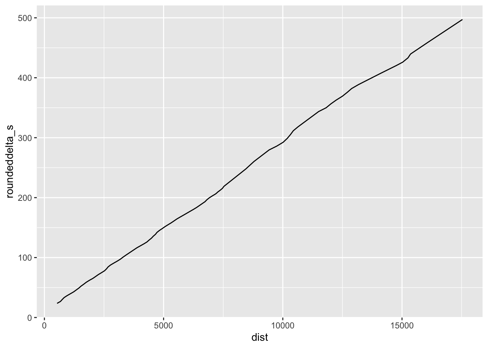

5 Plotting Locations a Certain Time Into the Stage
If we are missing timing data from the start of the run, and we assume that the run started exactly on the minute, we can round down the first sample time to get to the next nearest minute using the lubridate::round_date() function:
first_time = route_telem_utm[1,]$utc
first_time_rounded = round_date(first_time, unit="1 minutes")
c(first_time, first_time_rounded)## [1] "2021-10-02 08:37:23 UTC" "2021-10-02 08:37:00 UTC"We can then use the rounded first time as a basis for a running stage time estimate by subtracting that time from the sample datetimes:
# Get stage time as a time object...
route_telem_utm$newdelta_t = route_telem_utm$utc - first_time_rounded
# And in seconds
route_telem_utm$newdelta_s = as.double(route_telem_utm$newdelta_t)| X | accx | accy | altitude | brk | driverid | gear | heading | kms | name | rpm | speed | status | throttle | track | utx | X_rally_stageid | X_carentryid | X_telemetryID | X_name | delta | utc | geometry | dist | newdelta_t | newdelta_s |
|---|---|---|---|---|---|---|---|---|---|---|---|---|---|---|---|---|---|---|---|---|---|---|---|---|---|
| 1870 | 0 | 0 | 0 | 0 | NA | 0 | 144 | 0.6 | 33 | 0 | 166 | Competing | 0 | NA | 1.633164e+12 | bcc5537d-d28a-40af-ba86-95dad7fb9cd1 | b185c5df-8115-40cf-bd81-566f016f6bf5 | /a3f5f3f5-3fb0-42ab-af90-24d91c0493d0/ss07eva_telemetry_js/js | Evans | 0 | 2021-10-02 08:37:23 | POINT (401052.2 6856758) | 531.9830 | 23.6 secs | 23.6 |
| 1869 | 0 | 0 | 0 | 0 | NA | 0 | 150 | 0.7 | 33 | 0 | 140 | Competing | 0 | NA | 1.633164e+12 | bcc5537d-d28a-40af-ba86-95dad7fb9cd1 | b185c5df-8115-40cf-bd81-566f016f6bf5 | /a3f5f3f5-3fb0-42ab-af90-24d91c0493d0/ss07eva_telemetry_js/js | Evans | 3200 | 2021-10-02 08:37:26 | POINT (401117.6 6856633) | 673.7129 | 26.8 secs | 26.8 |
| 1868 | 0 | 0 | 0 | 0 | NA | 0 | 172 | 0.8 | 33 | 0 | 60 | Competing | 0 | NA | 1.633164e+12 | bcc5537d-d28a-40af-ba86-95dad7fb9cd1 | b185c5df-8115-40cf-bd81-566f016f6bf5 | /a3f5f3f5-3fb0-42ab-af90-24d91c0493d0/ss07eva_telemetry_js/js | Evans | 6400 | 2021-10-02 08:37:30 | POINT (401142.7 6856572) | 746.9263 | 30.0 secs | 30.0 |
| 1867 | 0 | 0 | 0 | 0 | NA | 0 | 220 | 0.9 | 33 | 0 | 107 | Competing | 0 | NA | 1.633164e+12 | bcc5537d-d28a-40af-ba86-95dad7fb9cd1 | b185c5df-8115-40cf-bd81-566f016f6bf5 | /a3f5f3f5-3fb0-42ab-af90-24d91c0493d0/ss07eva_telemetry_js/js | Evans | 9600 | 2021-10-02 08:37:33 | POINT (401093 6856511) | 825.5652 | 33.2 secs | 33.2 |
| 1866 | 0 | 0 | 0 | 0 | NA | 0 | 210 | 1.0 | 33 | 0 | 149 | Competing | 0 | NA | 1.633164e+12 | bcc5537d-d28a-40af-ba86-95dad7fb9cd1 | b185c5df-8115-40cf-bd81-566f016f6bf5 | /a3f5f3f5-3fb0-42ab-af90-24d91c0493d0/ss07eva_telemetry_js/js | Evans | 12800 | 2021-10-02 08:37:36 | POINT (401020.1 6856413) | 947.9104 | 36.4 secs | 36.4 |
| 1865 | 0 | 0 | 0 | 0 | NA | 0 | 208 | 1.1 | 33 | 0 | 159 | Competing | 0 | NA | 1.633164e+12 | bcc5537d-d28a-40af-ba86-95dad7fb9cd1 | b185c5df-8115-40cf-bd81-566f016f6bf5 | /a3f5f3f5-3fb0-42ab-af90-24d91c0493d0/ss07eva_telemetry_js/js | Evans | 16000 | 2021-10-02 08:37:39 | POINT (400938.8 6856299) | 1088.1680 | 39.6 secs | 39.6 |
We can now plot the distance into stage and the stage time (as per the telemetry sample points) relative to each other.
ggplot(route_telem_utm) +geom_line(aes(x=dist, y=newdelta_s))
If we have data for two or more cars, this would start to provide a basis for comparison. For example, we might be able to see the distance along the stage where their times diverge.